Bei der Auswahl der Rettungsausrüstung müssen u.a. folgende Aspekte berücksichtigt werden:
Rettungsgurte bestehen überwiegend aus Gurtbändern, die den Körper so umschließen, dass die zu rettende Person während des Rettungsvorgangs in einer aufrechten Lage gehalten wird. Sie sollten vor Aufnahme der Tätigkeit angelegt werden. Rettungsgurte sind nicht geeignet, als Körperhaltevorrichtungen in Absturzschutzsystemen eingesetzt zu werden.
Auffanggurte nach DIN EN 361 können immer auch als Rettungsgurte benutzt werden.
Rettungsgurte enthalten mindestens einen Befestigungspunkt (Ösen oder Schlaufen) für den Anschluss eines Verbindungsmittels bzw. eines Tragmittels. Befestigungspunkte an beiden Schultern (Rettungsösen) sind für das Retten aus engen Öffnungen vorteilhaft (siehe Abbildung 9).
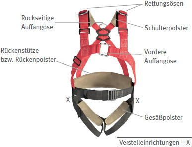
Abb. 9 Auffanggurt mit Rettungsösen
Es sind Rettungsgurte zu bevorzugen, die einen entsprechenden Komfort aufweisen, z. B. Polsterung der Gurtbänder. Rettungsgurte können in die Arbeitskleidung, z. B. Latz- oder Wathosen, integriert sein (siehe Abbildung 10).
Abb. 10 Rettungsgurt in Arbeitshose eingearbeitet
In der Gebrauchsanleitung (Anleitungen und Informationen des Herstellers) ist die maximale Nennlast (Gewicht der Person, Kleidung und evtl. Material und Werkzeug) des Rettungsgurts angegeben. Diese darf nicht überschritten werden.
Rettungsschlaufen sind dann geeignet, wenn das Anlegen eines Rettungsgurts vor Beginn der Tätigkeit nicht möglich oder nicht geeignet ist (z. B. Einstieg durch enge Öffnungen). Sie sollten nur im Ausnahmefall zur Anwendung kommen, können aber lebensrettend sein. Rettungsschlaufen haben mindestens einen Befestigungspunkt (Ösen oder Schlaufen) für den Anschluss eines Tragmittels.
Rettungsschlaufen werden in drei Klassen unterteilt:
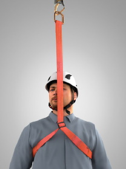
Abb. 11 Rettungsschlaufe der Klasse A
Abb. 12 Rettungsschlaufe der Klasse B
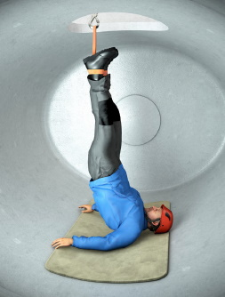
Abb. 13 Rettungsschlaufe der Klasse C
Rettungsschlaufen der Klasse A dürfen nicht zum Selbstabseilen verwendet werden. Bei freiem Hängen können durch die fehlende Unterstützung des Körpers schon nach einer Hängedauer von zwei Minuten die Einschränkung der Atmung und der Ausfall von motorischen Funktionen (z. B. die Handkraft zum Führen eines Seils) auftreten.
Rettungshubgeräte werden in zwei Klassen unterteilt.
Mit Rettungshubgeräten der Klasse A können sich Personen ausschließlich von einem tiefer- zu einem höhergelegenen Ort heraufziehen oder werden von einer anderen Person heraufgezogen.
Rettungshubgeräte der Klasse B sind wie Geräte der Klasse A einsetzbar, jedoch besteht hier die Möglichkeit, den zu Rettenden durch eine zusätzliche Absenkfunktion über eine begrenzte Strecke herabzulassen um z. B. das Verhaken an Hindernissen zu verhindern.
Für die Rettung nach unten sind Abseilgeräte zu verwenden.
Hinweis
Befinden sich unterhalb der benutzenden Person flüssige oder feste Stoffe, in denen man versinken kann, dürfen Rettungshubgeräte der Klasse B nicht eingesetzt werden.
Rettungshubfunktionen können auch in persönlichen Schutzausrüstungen gegen Absturz, z. B. Höhensicherungsgeräten nach DIN EN 360, integriert sein. Der Vorteil ist die sofortige Verfügbarkeit als Rettungshubeinrichtung nach einem Sturz in das Höhensicherungsgerät (siehe Abbildung 2 und Abbildung 14).
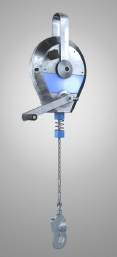
Abb. 14 Höhensicherungsgerät mit integriertem Rettungshubgerät der Klasse B
Abseilgeräte (siehe Abbildung 15) sind entweder selbsttätig wirkende (Typ 1) oder manuell betätigte (Typ 2) Geräte, einschließlich eines Tragmittels (z. B. Drahtseil, textile Seile), mit denen Personen entweder sich selbst oder andere mit einer begrenzten Geschwindigkeit von einem höheren zu einem tiefer gelegenen Ort retten können.
Geräte des Typ 2 müssen mit einer Panikverriegelung ausgestattet sein, die ein unkontrolliertes Abseilen oder einen Absturz verhindert und gewährleistet, dass die Abseilgeschwindigkeit von 2 m/sec nicht überschritten wird, wenn die Steuereinrichtung losgelassen oder die Panikverriegelung betätigt wird.
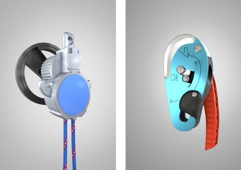
Abb. 15 Abseilgeräte (links Typ 1, rechts Typ 2 – vorwiegend Einsatz bei seilunterstützten Zugangs- und Positionierungsverfahren)
Abseilgeräte werden in der Praxis unterschiedlich stark beansprucht und werden nach der zu erwartenden Abseilarbeit in vier Klassen unterteilt:
Hinweis
Ein Abseilgerät, mit dem z. B. 100 Fahrgäste aus einer Seilbahnkabine in 100 m Höhe abgeseilt werden, muss höheren Anforderungen genügen als ein Gerät, mit dem sich ein Kranführer oder eine Kranführerin einmalig aus 20 m Höhe aus seiner Kranführerkabine abseilt.
Die Abseilarbeit W [J] ist das Produkt aus Abseilhöhe h [m], Gewicht m der abzuseilenden Person [kg], Erdbeschleunigung [g = 9,81 m/s²] und Anzahl der Abseilvorgänge n:
W [J] = h [m] · m [kg] · g [m/s2] · n
Die minimale und maximale Nennlast (Gewicht der Person, Kleidung und evtl. Material und Werkzeug) aus der Gebrauchsanleitung des Herstellers ist zu beachten. Es gibt Abseilgeräte, die für eine Rettung von mehr als einer Person gleichzeitig zugelassen sind.
Hinsichtlich der technischen Bauart werden Abseilgeräte aufgrund ihrer Bremseinrichtungen unterschieden. Bei den Geräten mit Seilreibungsbremsen kann die zu rettende Person oder die rettende Person die Abseilgeschwindigkeit beeinflussen, was bei Geräten mit Fliehkraftbremse in der Regel nicht der Fall ist. Bei einigen Geräten kann auch durch Seilumlenkung die Abseilgeschwindigkeit geregelt werden.
Es gibt auch Abseilgeräte, die zusätzlich mit einer Hubeinrichtung ausgestattet sind. Diese Geräte eignen sich dann, wenn die zu rettende Person während des Rettungsvorgangs angehoben werden muss. Ein Anheben kann z. B. erforderlich sein, um die zu rettende Person vom Auffangsystem zu lösen (siehe Abbildung 16).
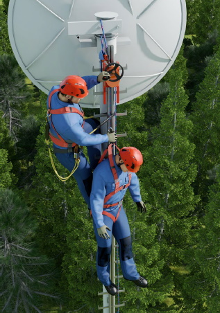
Abb. 16 Abseilgerät mit integrierter Hubeinrichtung (Passivrettung)
Verbindungselemente müssen selbstschließend sein. Dabei gibt es selbstverriegelnde (siehe Abb. 17 und 19) oder manuell verriegelbare (siehe Abb. 18) Ausführungen.
Die Verwendung von selbstverriegelnden Verbindungselementen ist zu empfehlen, damit beim häufigen Öffnen und Schließen des Verbindungselements sichergestellt wird, dass das Verbindungselement verschlossen ist.
Weitere Auswahlkriterien enthält die DGUV Regel 112-198 "Benutzung von persönlichen Schutzausrüstungen gegen Absturz".
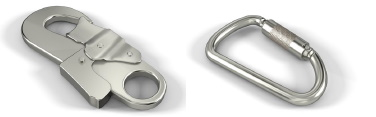
Abb. 17 Beispiele für selbstverriegelnde Verbindungselemente mit Einhandbetätigung
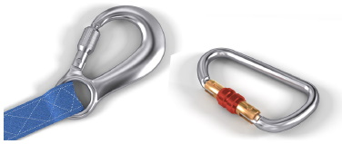
Abb. 18 Beispiele für manuellverriegelbare Verbindungselemente mit Überwurfmutter als Verschlusssicherung
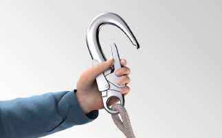
Abb. 19 Beispiel für ein selbstverriegelndes Verbindungselement mit großer Öffnungsweite und Einhandbetätigung
Zur Verbindung von Verbindungselementen eines Rettungssystems mit Anschlagmöglichkeiten größerer Abmessungen können auch Anschlagverbindungselemente eingesetzt werden (siehe Abb. 20).
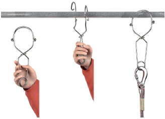
Abb. 20 Beispiel für ein Anschlagverbindungselement
Seil- und Bandklemmen (siehe Abbildungen 21 und 22) werden als verbindende Bestandteile in Rettungssystemen verwendet. Sie ermöglichen in Verbindung mit einem Rettungsgerät (Abseilgerät oder Rettungshubgerät), dass die aufgefangene Person angehoben und/oder abgelassen werden kann. Die Klemme wird an dem Seil des Rettungsgeräts befestigt (siehe Abbildung 23). Im Anschluss wird die Klemme durch die rettende Person an das belastete Verbindungsmittel (z. B. eines Höhensicherungsgerätes) bzw. die belastete bewegliche Führung (z. B. eines mitlaufenden Auffanggerätes) angefügt. Somit kann die aufgefangene Person sicher angehoben und das belastete Verbindungsmittel bzw. die belastete bewegliche Führung von der Anschlageinrichtung ausgehängt werden.
Es ist zu beachten, dass die Klemme zugehörig zu dem jeweiligen Verbindungsmittel (Drahtseil oder Textilband, Durchmesser des Drahtseils bzw. Breite des Textilbands) geprüft und zugelassen ist und gemeinsam mit dem Rettungsgerät aufbewahrt wird.
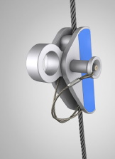
Abb. 21 Seilklemme
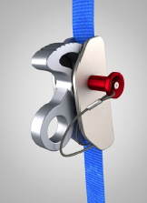
Abb. 22 Bandklemme
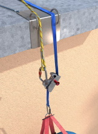
Abb. 23 Bandklemme am Verbindungsmittel angefügt
Anschlageinrichtungen können ein Bestandteil der PSA gegen Absturz und der Rettungsausrüstung sein, z. B. eine Trägerklemme (DIN EN 795 Typ B), oder die Verbindung dieser Ausrüstungen mit dem Bauwerk oder anderen Objekten darstellen, z. B. eine Anschlageinrichtung, die dauerhaft am Gebäude befestigt ist.
Die Anforderungen an Anschlageinrichtungen basieren generell auf der Einwirkung durch den Lastfall "Auffangen" (6 kN, siehe DGUV Regel 112-198 "Benutzung von persönlichen Schutzausrüstungen gegen Absturz"). Wenn eine Person in das Auffangsystem gestürzt ist, gilt diese Anschlageinrichtung als belastet. Ob sie auch für die Rettung verwendet werden kann, ergibt sich aus der Gebrauchsanleitung des Herstellers und muss im Rettungskonzept beurteilt werden.
Hinweis
Das Rettungssystem darf sich nicht unbeabsichtigt von der Anschlageinrichtung lösen können.
Anschlagösen an Maschinen können nur dann verwendet werden, wenn diese speziell als Anschlageinrichtung vorgesehen und entsprechend gekennzeichnet sind.
Informationen zu Anschlageinrichtungen, Anschlagmöglichkeiten und Anschlaghilfen enthalten die DGUV Regel 112-198 "Benutzung von persönlichen Schutzausrüstungen gegen Absturz" und die DGUV Information 201-056 "Planungsgrundlagen von Anschlageinrichtungen auf Dächern".